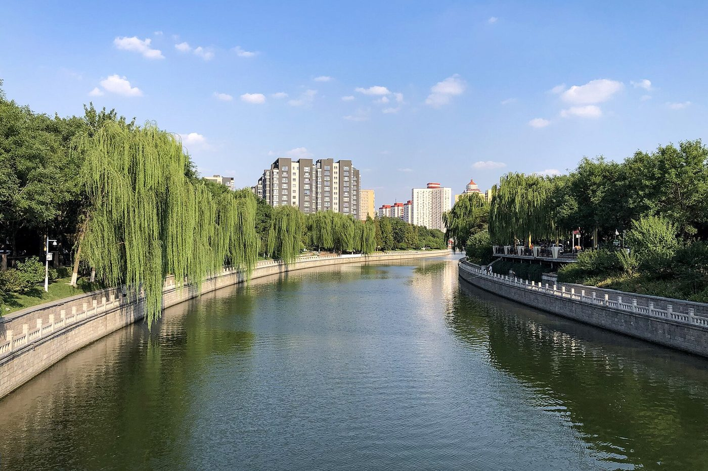
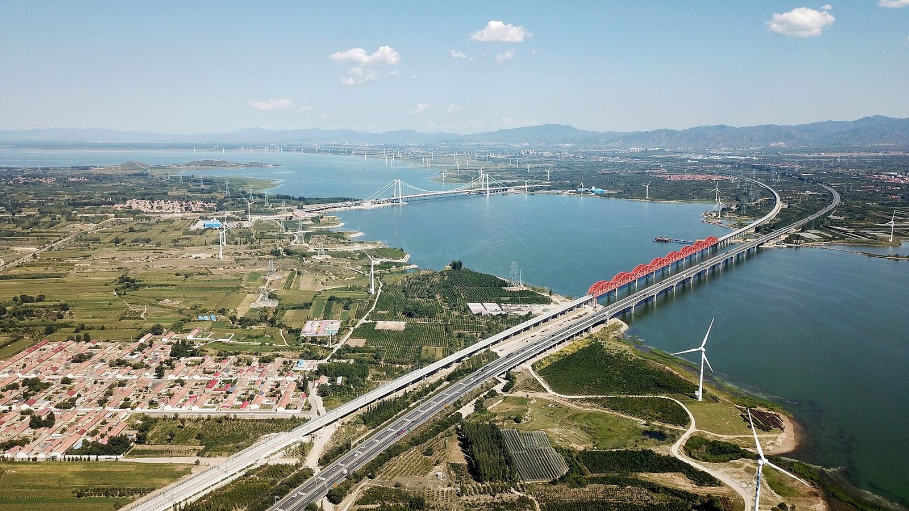

EXHIBIT 01
戾陵堰 · 车箱渠
曹魏嘉平二年（250），镇北将军刘靖在梁山（今石景山一带）筑戾陵堰，开车箱渠，引㶟水灌溉蓟城南北。据《水经注》记载，灌区覆盖蓟城周围的大片农田。
这是北京地区有记载的最早大型引水灌溉工程，也是“用水”这一思路的开端——在此之前，人们想的都是怎么躲开它。
看点：堰址、渠线与今天的引水渠走向，几乎是同一条走廊。

永定河数字博物馆
Yongding River · Digital Museum
0
从曹魏的戾陵堰到今天的水库群，人类与这条河周旋了两千年。这一厅把“水患”与“水利”放在同一条时间线上。
Hall 04 · Taming the Water
永定河含沙量高、河道游荡，卢沟桥一带的河床高出北京城二十余米。据记载，1271 年以后的七百余年间，这条河发生大小水灾 124 次。
于是，治水成了这片土地上最漫长的一项工程：既讲筑堤、修库、引水，也讲决口、迁徙与被淹没的城。

Exhibits · 展项
每一组都可以单独停留。展签上的“看点”是本馆给出的观察建议，不是必看清单。
曹魏嘉平二年（250），镇北将军刘靖在梁山（今石景山一带）筑戾陵堰，开车箱渠，引㶟水灌溉蓟城南北。据《水经注》记载，灌区覆盖蓟城周围的大片农田。
这是北京地区有记载的最早大型引水灌溉工程，也是“用水”这一思路的开端——在此之前，人们想的都是怎么躲开它。
看点：堰址、渠线与今天的引水渠走向，几乎是同一条走廊。

清康熙三十七年（1698），康熙命于成龙主持河政，筑堤束水，并把“无定河”改名为“永定河”，在卢沟桥西立碑记事。
但“永定”始终是一个愿望：此后数百年，这条河仍多次决口，淹没两岸。
看点：把清代堤防图叠在今天的地图上，堤线基本沿用。
1951 年 10 月动工，全国四万多名建设者参与，1954 年 5 月竣工。总库容 41.6 亿立方米，是新中国成立后兴建的第一座大型水库，被称为“新中国水利事业的摇篮”。
建成后拦蓄 1000 立方米／秒以上的洪水 8 次，为下游京津冀累计供水数百亿立方米。
看点：工地影像里的混凝土搅拌机与独轮车，是那个年代的施工方式。

为建水库，怀来县城与周边村庄沉入水底。那是一座有 1300 多年历史的古城，近三万人告别故土。
展厅用搬迁名册、老地图与水下测绘，复原了这座“看不见的城”。
提示：这一组与“官厅水库”并置观看，效果更完整。
据统计，1271 年以后的七百余年间，永定河发生大小水灾 124 次，洪水 6 次逼近北京城，8 次淹没天津。
档案墙把每一次决口的位置、时间与水位标在地图上，可以按时段检索。
数据来源：公开水利史料与地方志整理，具体数字以官方发布为准。
Related · 关联影像